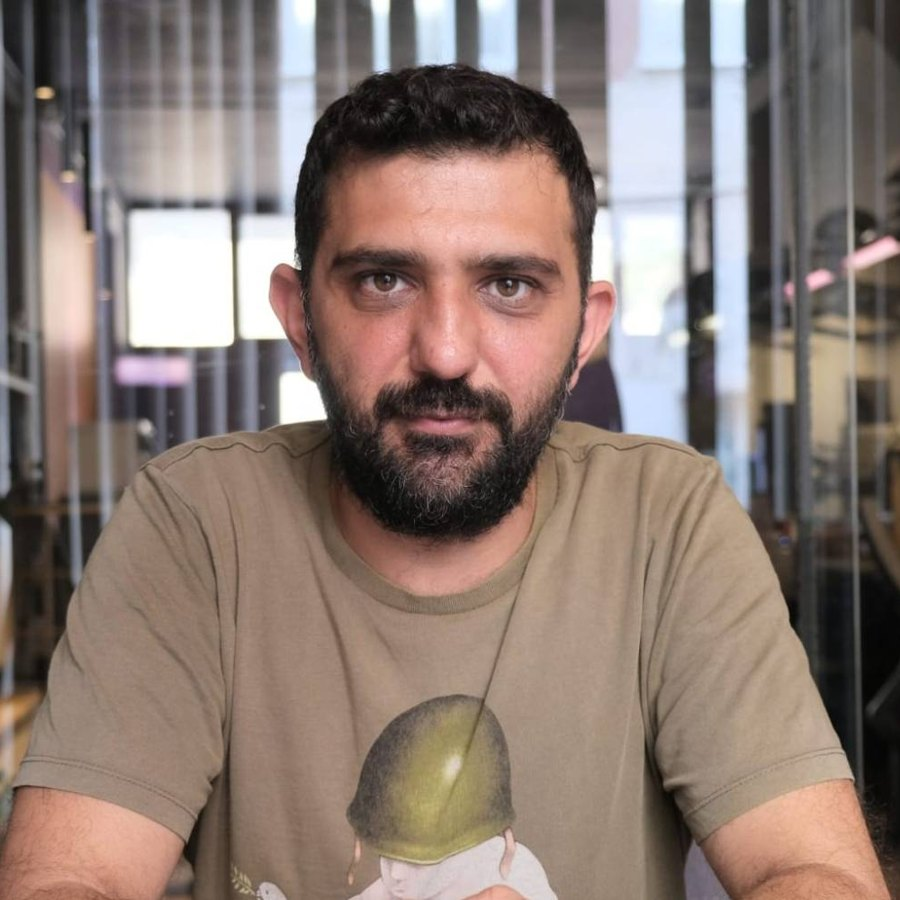

Sanat Psikoterapisi
Her şey kelimelerle anlatılamaz. Resim, kolaj ve serbest malzemeyle çalışarak içinizde olup bitene bir biçim veriyoruz. Yetenek ya da sanat geçmişi gerekmez; önemli olan ortaya çıkan eser değil, o süreçte fark ettiklerinizdir.
Yetişkinlerle sanat psikoterapisi, varoluşçu ve psikanalitik yaklaşımlarla çalışıyorum. Yüz yüze ve online seanslar.

Hakkımda

Doğuş Üniversitesi Psikoloji bölümünden yüksek onur derecesiyle mezun oldum. Şu anda Gedik Üniversitesi Klinik Psikoloji Yüksek Lisans programında tez aşamasındayım; tezimde otantiklik, kaygı ve somatizasyon arasındaki ilişkiyi inceliyorum.
Varoluşçu Akademi'deki mezuniyet tezimi "Psikanalizden varoluşçuluğa kaygı kavramı" üzerine yazdım ve bu çalışmayı "Kaygının Anlamı" başlığıyla çeşitli kurumlarda sunmaya devam ediyorum.
Yetişkinlerle; sanat psikoterapisi, varoluşçu psikoterapi ve psikanalitik psikoterapi çerçevesinde çalışıyorum. Bugüne kadar birçok sivil toplum kuruluşunda çocuklar ve yetişkinlerle gönüllü çalışmalar yürüttüm.
Ad Soyad
Eğitimlerime göz atınÇalışma alanları
Yetişkinlerle üç çerçevede çalışıyorum. Hangisinin size daha uygun olduğunu ön görüşmede birlikte konuşabiliriz.
Her şey kelimelerle anlatılamaz. Resim, kolaj ve serbest malzemeyle çalışarak içinizde olup bitene bir biçim veriyoruz. Yetenek ya da sanat geçmişi gerekmez; önemli olan ortaya çıkan eser değil, o süreçte fark ettiklerinizdir.
Anlam, özgürlük, yalnızlık, seçim ve ölümlülük… Hepimizin bir gün karşılaştığı temel sorular. Varoluşçu yaklaşımda belirtilerin ötesine, hayatınızı nasıl yaşadığınıza ve kim olmak istediğinize bakıyoruz.
Bugün tekrar eden örüntülerin, ilişkilerin ve duyguların geçmişteki izlerini birlikte keşfediyoruz. Bilinçdışı süreçleri anlamak, tekrarlardan çıkıp yeni seçimler yapmaya alan açar.
Hangi konularda
Aşağıdakiler en sık çalışılan başlıklar. Listede kendinizi bulamasanız da yazabilirsiniz; ön görüşmede birlikte değerlendiririz.
Süreç
Kısa bir telefon görüşmesi ya da mesajla ihtiyacınızı konuşuyoruz.
Sizi neyin getirdiğini, beklentilerinizi ve çalışma çerçevesini birlikte belirliyoruz.
Genellikle haftada bir, 50 dakikalık seanslar; yüz yüze ya da online.
Görüşmelerde paylaşılan her şey etik ilkeler çerçevesinde gizli tutulur.
Eğitimler
Lisanstan bugüne; akademik eğitim, psikoterapi eğitimleri ve gönüllü çalışmalar.
Psikanalizden varoluşçuluğa: kaygıyı susturulacak bir belirti olarak değil, bize bir şey söyleyen bir deneyim olarak dinlemek.
Varoluşçu Akademi mezuniyet tezime dayanan bu sunumda kaygının psikanalitik kuramdan varoluşçu düşünceye nasıl anlaşıldığını anlatıyorum. Kaygıyı yalnızca giderilmesi gereken bir belirti olarak değil, bize bir şey söyleyen bir deneyim olarak ele alıyorum.
Tezimi "Psikanalizden Varoluşçuluğa Kaygı Kavramı" üzerine yazdım. Bugün yüksek lisans tezimde de aynı soruyu otantiklik ve beden üzerinden sürdürüyorum: Kaygı bize ne anlatmaya çalışıyor ve onu dinlediğimizde ne değişir?
Kaygı çoğu zaman bir seçimin, bir değişimin ya da ertelenmiş bir sorunun eşiğinde belirir. Sunumda bu eşiği birlikte düşünmeye davet ediyorum.
Kurum ve topluluklardan gelen sunum davetlerine açığım.
“Kaygı, özgürlüğün baş dönmesidir.”
İçindekiler
Kaygı
Kaygıyı susturmaya çalışmak yerine ne söylediğini dinlemek üzerine.
Okumaya devam et: Kaygı neden bir düşman değildir?6 dk okuma
Beden
Açıklanamayan ağrıların ve bedensel yakınmaların duygusal karşılıkları.
Okumaya devam et: Beden konuştuğunda: Somatizasyon8 dk okuma
Sanat terapisi
Kısa cevap: hayır. Uzun cevap bu yazıda.
Okumaya devam et: Sanat terapisi için yetenekli olmak gerekir mi?4 dk okuma
Varoluş
Başkalarının beklentileriyle kendi sesimiz arasında kalmak üzerine.
Okumaya devam et: Otantiklik: Kendin olmak neden bu kadar zor?7 dk okuma
SSS
Hayır. Amaç güzel bir eser üretmek değil; malzemeyle kurduğunuz ilişki ve ortaya çıkanın size düşündürdükleri.
Seanslar 50 dakikadır ve genellikle haftada bir yapılır. Sürecin sıklığı ve süresi ihtiyaca göre birlikte belirlenir.
Görüntülü görüşme ile yapılır. Kesintisiz, sessiz ve kendinizi rahat hissettiğiniz bir ortam yeterlidir.
Şu anda yalnızca yetişkinlerle (18 yaş ve üzeri) çalışıyorum.
Evet. Paylaştıklarınız etik ilkeler ve yasal çerçeve dahilinde gizli tutulur.
İletişim
İlk adım bir mesaj kadar kolay. Kısa bir ön görüşmeyle ihtiyacınızı birlikte konuşalım.